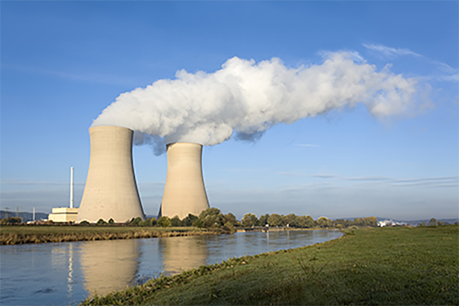
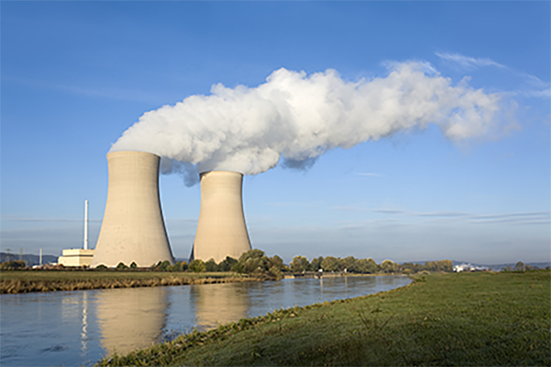

There are many benefits to nuclear energy. One advantage is that it replaces the need for more traditional energy sources, such as fossil fuels. This helps to reduce our reliance on fossil fuels, which is better for the enivornment and produces signifcantly less pollution. Nuclear energy is incredibly efficient, and after aggregating the costs of production, the total output of energy is 80% higher than it costs to create.
 

Nuclear energy produces almost constantly, which also reduces dependence on global oil and fuel prices. Many reactors are active more than 90% of the year, and it is also independent of weather events. Unlike other forms of renewable energy such as wind and solar, it does not depend on the hours of daylight or wind available, and can therefore produce high amounts of energy at peak demand times regardless of natural circumstances. This independence creates a strong argument over other renewable energy sources.